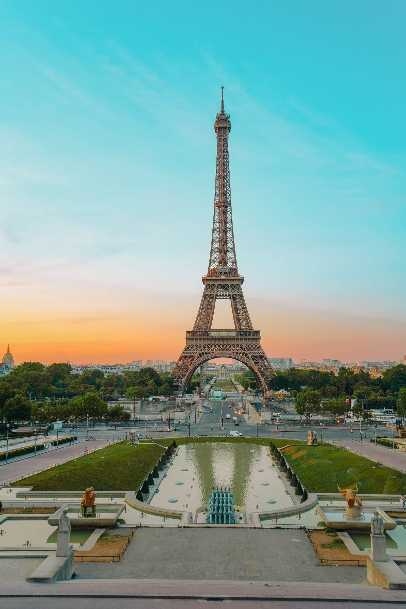

The Eiffel Tower glowing at dusk over the Seine.
Overview
Paris is a city that feels alive on every street corner. You’ll find grand monuments and wide
boulevards mixed with cozy neighborhoods that invite you to slow down and explore.
Whether it’s museums, cafés, or a perfect croissant, Paris always wins you over.
Must-See Spots
Eiffel Tower
Louvre Museum
Notre-Dame Cathedral
Montmartre & Sacré-Cœur
Musée d’Orsay
Visitor Tips
Buy tickets online for popular sites.
Use the Métro or walk—parking is limited.
Learn a few basic French phrases.
Visit bakeries in the morning for fresh pastries.
“This blog made planning easy and fun, with clear routes and
time-saving tips.”